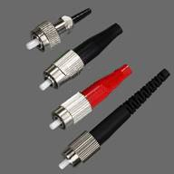
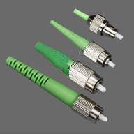
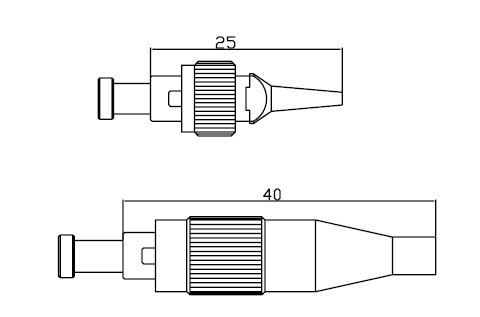

FC/UPC,FC/APC Fiber connector
 
FC/UPC FC/APC
a.Supply multi coded colour
b.Supply SM,MM,Simplex & Duplex connectors.
c.Supply all set connectors. And accessories(SKD)
d.Supply 3.0mm ,2.0mm ,0.9mm boot.
